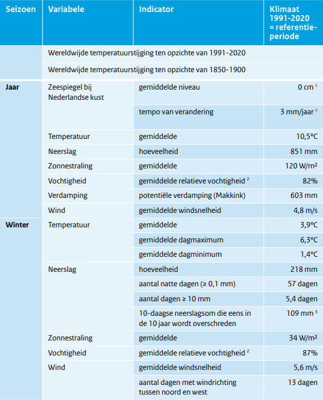
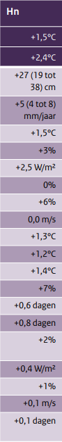
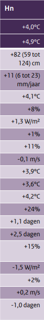

Het scenario waarvoor wij voor hebben gekozen is het scenario waar de CO2 uitstoot blijft stijgen en het klimaat natter word.
Onderaan bevindt zich meer informatie over scenario die door ons gekozen was
  We hebben voor dit scenario gekozen omdat het ons het meest uitdagende scenario leek. De meest extreme veranderingen komen hierin voor, wat ons veel ruimte biedt voor goed onderzoek en creatieve uitwerking van de kaarten. Ook hebben we in aandacht het feit dat het dit scenario relatief realistisch is. Door onderzoek te doen met eerder benoemde scenario in gedachten worden wij ook meer bewust van de huidige milieusituatie en hopen andere ook op aandacht brengen.